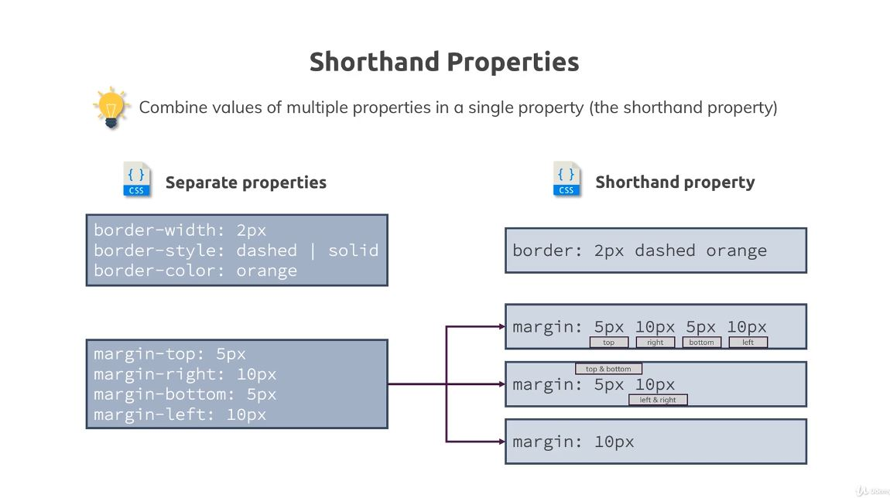
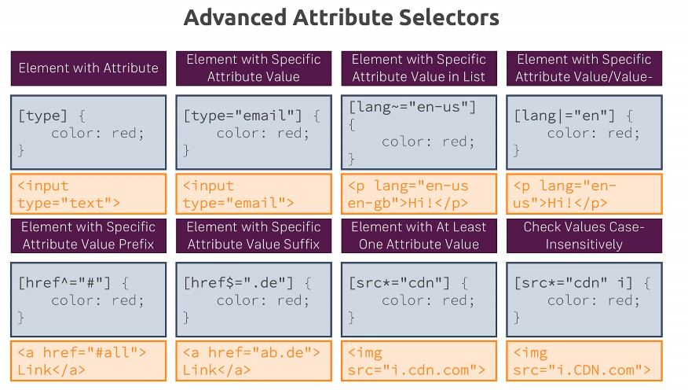
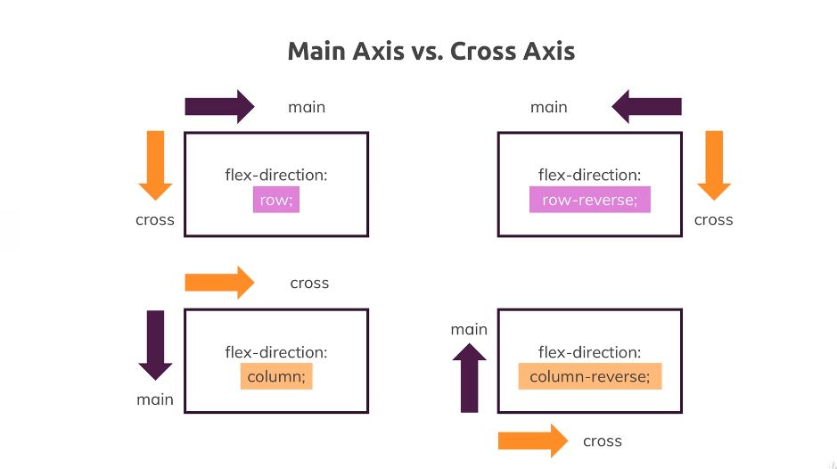
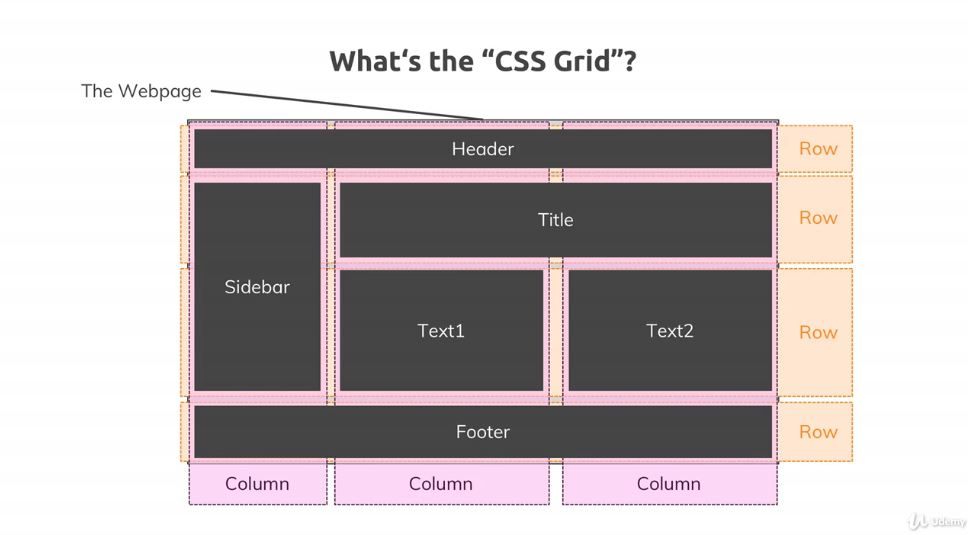

CSS Complete Guide
Notes based on Udemy Course CSS - The Complete Guide 2020 (incl. Flexbox, Grid, & Sass)
1. Getting Started
1.1 What is CSS
- Cascading Style Sheets
- HTML Required, structure of the page.
- CSS allows for the styling of the page (is optional!)
- Simple provided example
1.2 CSS History, Present and Future
- CSS 1
- Released in 1996
- CSS 2
- Released in 1998
- CSS 3
- In Development
- There will never be a CSS 4
- Development changed
- Split up into independent modules based on different features
1.3 Course Outline
- Basic Track
- Getting Started
- The Basics
- Diving Deeper
- More on Selectors & CSS Features
- Practicing the Basics
- Positioning
- Advanced Track
- Backgrounds & Images
- Dimensions, Units, & Sizes
- Javascript & CSS
- Responsiveness
- Styling Forms
- Working with Text & Fonts
- Expert Track
- Flexbox
- CSS Grid
- Transformations
- Transitions & Animations
- Writing Future-Proof CSS
- Sass Introduction
2. Diving into the Basics of CSS
2.1 Introduction
- How to Add CSS to HTML
- Setting up CSS Rules
- Selectors, Properties & Values
- Conflicting Styles
2.2 Adding CSS to our Project with Inline Styles
- Inline styling
- Shortcuts for colors, but comes down to hex codes.
<section style=style="background: #ff1b68;">
<h1>Get the freedom you deserve!</h1>
</section>
- Doesn't scale well, makes it difficult to read.
2.3 Understanding the <style> Tag and Creating a .css file
- Can use
<style>tag in<head>part of the HTML- Need to use selectors
- Select all
<section>elements:
<head>
<style>
section {
background: #ff1b68;
}
</style>
</head>
- Can use an external style sheet
main.css- Dont use style tags
- Separates structure and styles.
- Helps to keep HTML file from becoming bloated
- Browser can cache.
section {
background: #ff1b68;
}
- Have to explicitly tell include the file
<head>
<link rel="stylesheet" href="main.css">
<head>
2.4 Applying Additional Styles and Importing Google Fonts
- Changing more properties:
h1 {
color: white;
font-family: sans-serif;
}
- Given set of preinstalled font families, but can use Google Fonts for others
- Get import link
- Modify CSS file to use new font
h1 {
color: white;
font-family: 'Anton', sans-serif;
}
2.5 Theory Time - Selectors
- More about Selectors
| Selector | html |
css |
|---|---|---|
| Elements (Set equal style for these elements) | <h1>Our Header</h1> |
h1 { color: red; } |
| Classes (Set equal style for the elements within the same class) | <h1 class="blog-post">Our Header</h1> |
.blog-post { color: red; } |
| Universal (rarely use) | <h1>Our Header</h1> |
* { color: red; } |
| IDs (Set style to one specific element) | <h1 id="main-title">Our Header</h1> |
#main-title { color: red; } |
| Attributes (Set equal styles to all elements with attributes(s)) | <button disabled>Click</button> |
[disabled] { color: red; } |
- IDs not only used for styling, but also can add
#at end of URL and browser will jump down to that element.- Semantically should only occur once in page
- Kebab case recommended due to CSS being case-insensitive
-
Class good choice for multiple-use scenarios
- You can also assign multiple classes with a space between the classes, e.g.
class="section-title article-title
- You can also assign multiple classes with a space between the classes, e.g.
-
Modify index.html and main.css
<section id="product-overview">
<h1>Get the freedom you deserve!</h1>
</section>
<section id="plans">
<h1 class="section-title">Choose Your Plan</h1>
</section>
#product-overview {
background: #ff1b68;
}
h1 {
color: white;
font-family: 'Anton', sans-serif;
}
.section-title {
color: #2ddf5c;
}
Understanding the "Cascading" Style and Specificity
- Both
h1and.section-titleselectors apply - Class selector overrides the element one here
- Multiple rules affect same element, and have different priorities.
- Inspector with dev-tools
- Inline at top, since inline styling takes highest priority
- Class selector has higher priority than element selector, and second element selector takes priority over the first.
- Multiple rules applied to the same element is the cascading part of CSS
- Rules can lead to conflicts, as shown
-
To resolve conflicts, use Specificity
-
Cascading Style Sheets & Specificity
| Cascading | Specificity |
|---|---|
| Multiple rules can apply to the same element | Resolve conflicts arising from multiple Rules |
| - | Inline Styles |
| - | #ID selectors |
| - | .class, :pseudo-class and [attribute] selectors |
| - | <Tag> and ::pseudo-element selectors |
Understanding Inheritance
- An element also inherits some styles of the parent element.
- Add in a global rule
body {
font-family: 'Montserrat', sans-serif;
}
- Any direct selector has higher specificity and will overwrite inheritance if it defines the same property as parent
Adding Combinators
- Can use
inheritto be explicit- e.g.
font-family: inherit; - Not necessarily the best way
- Apply to only the one h1 tag:
- Class not good for only one use
- Already have ID for section, semantically not good
- Can use Combinator
- e.g.
- Combinator allows to combine multiple selectors
- More combinators, higher specificity
Theory Time - Combinators
- Adjacent Sibling
div + p { }- Using
h2 + p { color: red }:- Applied:
<h2>Not Applied</h2><p>CSS Applied<p> - Not applied:
<h3>Not Applied</h3><p>CSS Not Applied<p>
- Applied:
- Elements share the same parent
- Second element comes immediately after first element
- General Sibling
div ~ p { }- Using
h2 ~ p { color: red }: - Applied:
<h2>Not Applied</h2><p>CSS Applied<p> - Not applied:
<h3>Not Applied</h3><p>CSS Applied<p> - Applies to same level
- Elements share the same parent
- Second element comes after first, but doesn't have to be directly after it.
- Child
div > p { }- Using
div > p { color: red }:- Applied:
<div>Not Applied</div><p>CSS Applied</p> - Not applied:
<div>Not applied</div><article><p>Not applied</p></article> - Second element is direct child of first element.
- Applied:
- Descendant
div p { }- Level doesn't matter, all descendants
- Using
div > p { color: red }:- Applied:
<div>Not Applied</div><p>CSS Applied</p> - Applied:
<div>Not applied</div><article><p>Applied</p></article>
- Applied:
- Second element is a descendant of the first element
Summarizing Properties and Selectors
| Selectors | Properties | Values |
|---|---|---|
div |
background-color |
red |
.blog-post |
width |
30% |
#main-title |
color |
#fa923f |
[disabled] |
margin |
10px |
* |
display |
block |
-
Value Types
- Values are tightly coupled to specific property
| Pre-defined Options | Colors | Length, Sizes & Numbers | Functions |
|---|---|---|---|
display: block; |
background: red; |
height: 100px; |
background: url(...); |
overflow: auto; |
color: #fa923f |
width:20%; |
transform: scale(...); |
| - | color: #ccc; |
order: 1; |
- |
3. Diving Deeper into CSS
Introduction
- The Box Model
- Height & Width
- The
displayProperty - "Properties Worth to Remember"
- Pseudo Classes & Elements
Introducing the CSS Box Model
- Margin > Border > Padding > Content
- Margin not part of core element
- Space between element and next sibling
- The layers are the Box Model
Understanding the Box Model
#product-overview {
background: #ff1b68;
/* below added */
padding: 20px;
border: 5px black solid; /* shorthand */
margin: 20px;
}
Understanding Margin Collapsing and Removing Default Margins
body {
font-family: 'Montserrat', sans-serif;
/* below added */
margin: 0;
}
- Margin Collapsing
- Margins between elements are collapsed to one margin, bigger one "wins"
- MDN Reference
Theory Time - Working with Shorthand Properties
- Shorthand Properties
- Combine values of multiple properties in a single property (the shorthand property)

Applying Shorthands in Practice
#product-overview {
background: #ff1b68;
padding: 20px;
/* border-style: solid;
border-color: black;
border-width: 5px; */
border: 5px black solid;
margin: 20px;
}
- Can see splitting up in Dev-tools
Diving into the Height and Width Properties
- Set width to 100%
#product-overview {
background: #ff1b68;
width: 100%;
}
- Default behavior here anyway
section, likedivorh1elements are block elements- HTML feature
- Block-level elements always take full available width by default
-
Percentages, absolute pixel values
-
Heigh to 100%
#product-overview {
background: #ff1b68;
width: 700px;
height: 100%;
}
- Uses available height
- Relative height of 100%
Understanding Box Sizing
- Height & Width
#product-overview {
background: #ff1b68;
width: 100%;
height: 528px;
padding: 10px;
border: 5px solid black;
margin: 10px;
}
- Now have total width and height bigger than we specified
- All elements by default have a certain way of calculating width and height.
- Content box
#product-overview {
/* added: */
box-sizing: border-box;
}
- Now width and height include padding and border.
- Height property setting now takes these into account
- Move box-sizing to body
- Inheritance doesn't take effect because browser sets its own block sizing
- Use the
*selector now to reset all elements to have certain behavior- Overwriting inheritance and defaults
* {
box-sizing: border-box;
}
Adding the Header to our Project
- Add and modify header code
<header class="main-header">
<div>
<a href="index.html">
uHost
</a>
</div>
<nav>
<ul>
<li>
<a href="packages/index.html">Packages</a>
</li>
<li>
<a href="customers/index.html">Customers</a>
</li>
<li>
<a href="start-hosting/index.html">Start Hosting</a>
</li>
</ul>
</nav>
</header>
- Add to main.css
.main-header {
width: 100%;
background-color: #2ddf5c;
padding: 8px 16px;
}
Understanding the Display Property
- Add class to
nav,uland alllielements - Use certain way of writing classes, BEM (Block element modifier)
<nav class="main-nav">
<ul class="main-nav__items">
<li class="main-nav__item">
- Inline and block elements
display: blockanddisplay: nonevisibility: hidden;alternative
- Modify main.css
.main-nav__item {
display: inline-block;
}
- Can still style list items like block elements, but now displayed like inline elements now
Applying the Display Property and Styling our Navigation Bar
- Modify main.css
.main-header > div {
display: inline-block;
}
.main-nav {
display: inline-block;
text-align: right;
width: calc(100% - 49px);
}
.main-nav__items {
margin: 0;
padding: 0;
list-style: none;
}
Understanding an Unexpected inline-block Behavior
- Empty whitespace is added as extra inline element
- Can remove space, but there is a better way
width: calc(100% - 54px)for now, better solution later
Working with text-decoration and vertical-align
- Add class to brand part of header
<a href="index.html" class="main-header__brand">
- Modify main.css & change
.main-header > div {
display: inline-block;
vertical-align: middle; /* added */
}
.main-header__brand { /* added */
color: #0e4f1f;
text-decoration: none;
font-weight: bold;
font-size: 22px;
}
.main-nav {
display: inline-block;
text-align: right;
width: calc(100% - 74px); /* was 54px */
vertical-align: middle; /* added */
}
Styling Anchor Tags
.main-nav__item {
display: inline-block;
margin: 0 16px;
}
.main-nav__item a {
text-decoration: none;
color: #0e4f1f;
}
Adding Pseudo Classes
- Modifying main.css, using pseudo classes:
.main-nav__item a:hover {
color: white;
}
.main-nav__item a:active {
color: white;
}
Theory Time- Pseudo Classes and Pseudo Elements
-
Pseudo
- Class
- Defines the style of a special state of an element
:class name- MDN Reference
- Element
- Defines the style of a specific part of an element
: : element name- MDN Reference
- Class
-
Examples:
.main-nav__item a::after {
content: " (Link)";
color: red;
}
p::first-letter {
color: red;
font-size: 20px;
}
Grouping Rules
- Modify main.css
.main-nav__item a:hover, .main-nav__item a:active {
color: white;
}
Working with font-weight and border
- Modifying main.css:
.main-nav__item a {
text-decoration: none;
color: #0e4f1f;
font-weight: bold;
padding: 3px 0;
}
.main-nav__item a:hover, .main-nav__item a:active {
color: white;
border-bottom: 5px solid white;
}
Adding and Styling a CTA-Button
- Call to Action button
<li class="main-nav__item main-nav__item--cta">
.main-nav__item--cta a {
color: white;
background: #ff1b68;
padding: 8px 16px;
border-radius: 8px;
}
.main-nav__item--cta a:hover,
.main-nav__item--cta a:active {
color: #ff1b68;
background: white;
border: none;
}
Adding a Background Image to our Project
- Modifying main.css
#product-overview {
background: url("freedom.jpg");
width: 100%;
height: 528px;
padding: 10px;
}
Properties Worth to Remember

4. More on Selectors and CSS Features
Introduction (4)
- More on CSS Classes
!important- More on Pseudo Classes & Elements
not()
Using Multiple CSS Classes and Combined Selectors
- More on CSS Classes
- You can use multiple classes on one element
- html:
<div class="class1 class2" - css:
.class1 { ... } .class2 { .. }
- html:
- You can select a same-element combination
- html:
<a href="#" class="active"> - css:
a.active { ... }
- html:
- You can use multiple classes on one element
Classes or IDs
- Classes 1st pick
| CSS Class Selectors | Class ID Selectors |
|---|---|
.some-class{ ... } |
#some-id {...} |
<div class="some-class"> |
<div id="some-id"> |
| Re-usable | Only used once per page |
| Allow you to "mark" and name things for styling purposes only | Also got non-CSS meaning (e.g. on-page link) |
| Most-used selector type | Use if available anyways |
- Link to elsewhere on a page
- Baked into HTML
- HTML:
href="#test" - URL: ~#test
(Not) using !important
div {
color: red !important;
/*
overwrites specifity and all other selectors
*/
}
Do NOT use, bad practice
Selecting the Opposite with :not()
Excludes selectors
:not()
CSS and Browser Support
- Whenever you use a certain feature, browser must support it.
- There's a way to go around this in some cases, come back to this later
- Can be found at the bottom of MDN references
- Also: caniuse.com
5. Practicing the Basics
Adding Style to our Plans
Add class to each article plan
<article class="plan">
Add CSS
.section-title {
color: #2ddf5c;
text-align: center; /* added */
}
/* ... */
.plan {
background: #d5ffdc;
text-align: center;
padding: 16px;
margin: 8px;
display: inline-block;
width: 30%;
vertical-align: middle;
}
Working on the Recommended Plan
Add article class and modify title
<article class="plan plan--hightlighted">
<h1 class="plan__annotation">RECOMMENDED</h1>
Modify main.css, introducting new box-shadow and rgb()/rbga() color function
.plan--hightlighted {
background: #19b84c;
color: white;
box-shadow: 2px 2px 2px 2px rgba(0, 0, 0, 0.5);
}
Styling the Badge with border-radius
Can use border-radius to round the corners
.plan__annotation {
background: white;
color: #19b84c;
padding: 8px;
box-shadow: 2px 2px 2px 2px rgba(0, 0, 0, 0.5);
border-radius: 8px;
}
Styling our List
Get rid of margin and padding from all ul
<ul class="plan__features">
.plan__features {
list-style: none;
margin: 0;
padding: 0;
}
Adjust individual list items
<li class="plan__feature">
.plan__feature {
margin: 8px 0;
}
Working on the Title and the Price of our Packages
New Classes
<h1 class="plan__title">FREE</h1>
<h2 class="plan__price">$0/month</h2>
/* main.css */
.plan__title {
color: #0e4f1f;
}
.plan__price {
color: #858585;
}
.plan--hightlighted .plan__title {
color: white;
}
.plan--hightlighted .plan__price {
color: #0e4f1f;
}
Improving our Action Button
Add class
<button class="button">CHOOSE PLAN</button>
Styling, using inherit for font
.button {
background: #0e4f1f;
color: white;
font: inherit;
border: 1.5px solid #0e4f1f;
padding: 8px;
border-radius: 8px;
font-weight: bold;
cursor: pointer;
}
.button:hover,
.button:active {
background: white;
color: #0e4f1f;
}
Understanding Outlines
Comparable to border but is not part of box model, can use on focus active pseudo property
.button:focus {
outline: none;
}
Presenting the Core Features to the User
Add new given HTML section
Styling the Headline of the Core Features Section
Reuse section-title class, and add id to section
<section id="key-features">
<h1 class="section-title">Many Good Reasons to Stick Around</h1>
Styling
#key-features {
background: #ff1b68;
margin-top: 80px;
padding: 16px;
}
#key-features .section-title {
color: white;
margin: 32px;
}
Preparing the Content of the Key Feature Area
Add classes
<ul class="key-feature__list">
<li class="key-feature">
<p class="key-feature__description">Lightning Fast CDN</p>
<div class="key-feature__image"></div>
Styling
.key-feature__list {
list-style: none;
margin: 0;
padding: 0;
text-align: center;
}
.key-feature {
display: inline-block;
width: 30%;
vertical-align: top;
}
.key-feature__image {
background: #ffcede;
width: 128px;
height: 128px;
border: 2px solid #424242;
border-radius: 50%;
margin: auto;
}
.key-feature__description{
text-align: center;
font-weight: bold;
color: white;
font-size: 20px;
}
Adding the Footer
Add given new html code, assign classes
<footer class="main-footer">
<ul class="main-footer__links">
<li class="main-footer__link">
Styling
.main-footer {
background: black;
padding: 32px;
margin-top: 48px;
}
.main-footer__links {
list-style: none;
margin: 0;
padding: 0;
text-align: center;
}
.main-footer__link {
display: inline-block;
margin: 0 16px;
}
.main-footer__link a {
color: white;
text-decoration: none;
}
.main-footer__link a:hover,
.main-footer__link a:active {
color: #ccc;
}
Adding Packages Page
Reuse everything but what's in <main>
./packages/index.html
./packages/packages.css
Separate out CSS files
./shared.css
Styling the Links
Add classes
<section class="package">
Styling
main {
padding-top: 32px;
}
.package {
width: 80%;
margin: 16px 0;
border: 4px solid #0e4f1f;
border-left: none;
}
.package a {
text-decoration: none;
color: inherit;
display: block;
padding: 32px;
}
Styling our Package Boxes
Add classes
<h1 class="package__title">
<h2 class="package__subtitle">
<p class="package__info">
Also add individual IDs for each plan:
<section class="package" id="plus">
<section class="package" id="free">
<section class="package" id="premium">
Styling
.package:hover,
.package:active {
box-shadow: 2px 2px 4px rgba(0, 0, 0, 0.5);
border-color: #ff5454;
}
#plus {
background: rgba(213, 255, 220, 0.95);
}
#free {
background: rgba(234, 252, 237, 0.95);
}
#premium {
background: rgba(14, 79, 31, 0.95);
}
#premium .package__title {
color: white;
}
#premium .package__subtitle {
color: #bbb;
}
Adding "float" to our Package
Overwrite default positioning and tell browser to push element to left or right of page. Not great for moving block style elements.
Add properties
#free {
background: rgba(234, 252, 237, 0.95);
float: right;
border-right: none;
border-left: 4px solid #0e4f1f;
text-align: right;
}
Need clearfix to fix float.
<div class="clearfix"></div>
.clearfix {
clear: both;
}
Fixing the Hover Effect
Specificity border rule overrides, because of ID selector
Simple fix with redundant code
#free:hover,
#free:active {
border-left-color: #ff5454;
}
An alternative fix, only on very very rare occasions, using !important
.package:hover,
.package:active {
box-shadow: 2px 2px 4px rgba(0, 0, 0, 0.5);
border-color: #ff5454 !important;
}
NOT RECOMMENDED!
Adding Final Touches
On main page, add class
<div class="plan__list">
Styling
.plan__list {
width: 80%;
margin: auto;
text-align: center;
}
6. Positioning Elements with CSS
6. Introduction
Positioning - How to change the position of Elements
- Understanding the
positionProperty - Fixed Navigation Bars with
fixed - Positioning Elements with
z-index - Using
absoluteandrelative- Stand Alone and Combined - "Sticky" Positioning
- The "Stacking Context"
Why Positioning will Improve our Website
- Fixed Navigation Bar
- Background Image, slogan, positioning.
- Background Image on Packages page
- Add Badge to Plus plan on Packages page
Understanding Positioning - The Theory
position property applied automatically with static default value
Other values include absolute, relative, fixed, sticky(new)
Changing the Position
Top, bottom, left, right options.
Refer to initial position in Document Flow
Options to Positioning Context
Working with the fixed Value
top: 100px;
- Not reflected
- Need to provide value other than default
position: fixed;
- Removed from document flow
.parent .child-1 {
position: fixed;
width: 400px;
top: 100px;
}
- Now applied
- Use
top: 0;andmargin: 0;to see context - Now has viewport for the positioning context
- Example navbar:
.parent .child-1 {
position: fixed;
width: 100%;
top: 0;
left: 0;
margin: 0;
box-sizing: border-box;
}
- Can apply positioning no matter if it's a block level element or inline element
Creating a Fixed Navigation Bar
- Modify
main-header
.main-header {
width: 100%;
position: fixed;
top: 0;
left: 0;
background-color: #2ddf5c;
padding: 8px 16px;
}
Using position to Add a Background Image
Add div for background: <div class="background"></div> (in between header and beginning of body)
For image, add property background
- Set width/height to 100%, but cannot see image?
- This is due to position property.
- Use pixels, can now see.
- Change to fixed position and can now use percentages
.background {
background: url('../images/plans-background.jpg');
width: 100%;
height: 100%;
position: fixed;
}
Understanding the Z-Index
- Were able to position along axis, now need
z-index - Every element has
z-index: auto;by default, which isz-index: 0; - Use positive numbers to position above, negative for below
- NOTE: If element doesn't have position property applied (different from default),
z-indexhas no effect - Because background is fixed, covers up all package elements even though
z-indexmay be 0.- Can see Navbar because it is also fixed
- Now can add to background:
.background {
/* ... */
z-index: -1;
}
Adding a Badge to our Package
Add badge on 'Plus' package
<h2 class="package__badge">RECOMMENDED</h2>
Styling:
.package__badge {
position: fixed;
top: 0;
left: 0;
margin: 20px;
}
- Problem here is, the position context is the viewport, and that's not what we want here.
- Change to
absolute- No longer stuck to viewport
- Context based on two cases
- If no ancestors have position property, then positioning context is just the HTML element
- If it does have ancestors, the the closest one with position property applied is the positioning context for this element
- Change to
- Apply
absoluteto wholepackageinstead, breaks all packages.- Change to
relative- Fixes this and gives badge a positioning context
- Change to
.package {
/* ... */
position: relative;
}
Styling and Positioning our Badge with absolute and relative
Adjust package badge styling
.package__badge {
position: absolute;
top: 0;
right: 0;
margin: 20px;
font-size: 12px;
color: white;
background-color: #ff5454;
padding: 8px;
}
Also on .main-header: z-index: 1;, to keep package from going over navbar
Diving Deeper into Relative Positioning
- Using demo code, appling relative position to first child
- Initially, nothing changes
- Add a top/left, element moves
- With
position: relative, element is not taken out of document flow. absoluteandfixedspecifiy distance to parent element basicallyrelativejust specifies how it should move from current position- Can end up moving directly out of parent
Working with overflow and Relative Positioning
- In parent, can apply
overflow: hidden- Elements positioned out of parent are hidden
- Doing with
bodyandparentinstead, doesn't work.- Is passed to HTML selector
- Default CSS behavior
- Now doesn't apply to child
- Is passed to HTML selector
- Can add to both
Introducing sticky Positioning
Using demo code
Add position: sticky; to .parent .country
Behaves like fixed, but then has a limit
stickyis a combination of relative and fixed- Doesn't do anything without setting top or right, etc
- Can specify distance between element and viewport
- End of the content in the parent is limit
- Rather new value for
positionproperty, browser support not perfect yet
Understanding the Stacking Context
Using demo code
Fixed elements, taken out of document flow, with default z-index
Stacking context comes into play when dealing with the children.
Image will never go below its parent, will never go above elements higher than the parent
Only effects elements inside the parent
Stacking context depends on z-index of the parent
7. Understanding Background Images and Images
7. Introduction
- Understanding the
backgroundProperty - Images and Background Images
- Gradients
- Filters
Understanding background-size
- Using direct background properties such as
background-imageandbackground-color - Can define multiple backgrounds, just one color, but muiltiple images
- Can also use
background-sizebackground-size: 100px;affects the width here, can set width and height withbackground-size: 100px 50%;- Also have pre-defined keywords, such as
covercoverfinds out if height or weight is more important, sets width to 100% here, landscape container
containis another- entire image
- Also have pre-defined keywords, such as
- Can turn off repeating effect with
background-repeat: no-repeat;- Other options, such as
repeat-xandrepeat-y
- Other options, such as
Working with background-position
background-positionfirst value is x-axis, second is y-axis, top edge- Can also use percentage values here, which is based off of the excess space
- Default for y-axis is 50%
- Keyword
center=background-position: 50% 50%; - Also
left,top,bottom,right - Able to combine
background-position: left 10% bottom 20%;
The background Shorthand - Theory
- The background property
background: red;backgroundis a shorthand propertybackground-image- Set one or more background images
background-color- Set a background color
background-position- Set initial position, relative to background position layer
- Defined by
background-origin
background-size- Set size of background image
background-repeat- Defines how background images are repeated
background-origin- Set background positioning area
background-clip- Define whether background extends underneath border
background-attachment- Sets the scrolling behavior of the background image
- All except for
background-colorandbackground-cliprefer tobackground-imageonly
Applying background Origin, Clip and Attachment
- Comparable to box-sizing, but has extra value
- By default cropped before border, can change here
- Can set
background-origin: border-box;to have it go below border, away from default content-boxmeans content without border padding-
padding-boxincluding content and padding, but not border, is default value -
Can affect the cropping with
background-clip- Setting to
border-box, same as before - Setting to
padding-boxwill clip image after padding - Can set to
content-boxto clip before padding- Also affects width here
- Overwrites
background-origin
- Setting to
-
background-attachmentdefines how scrolling behaves in a container that has a background image but not fixed itself- Can set
fixed,scroll, orlocal - Rarely used
- Can set
Using the background Shorthand on our Project
#product-overview {
background: url('freedom.jpg') left 10% bottom 20% / cover no-repeat
border-box;
width: 100%;
height: 528px;
padding: 10px;
margin-top: 43px;
position: relative;
}
border-box at end applies to origin and clip, can give two separate values
Styling Images
<a href="index.html" class="main-header__brand">
<img
src="./images/uhost-icon.png"
alt="uHost - Your favorite hosting company"
/>
</a>
- Need to adjust size
- Default behavior is if you enter an image tag and you point to an image, then the default height and width of the original image will be used, regardless of the surrounding element
- Setting height on image elemnt as percentage dont respect surrounding container due to it being an inline element
- Must set
display: inline-block;
.main-header__brand {
color: #0e4f1f;
text-decoration: none;
font-weight: bold;
font-size: 22px;
height: 22px;
/* width: 20px; */
display: inline-block;
}
.main-header__brand img {
height: 100%;
/* width: 100%; */
}
Adding the Customers Page to our Website
Add given code and fix links
Working on the Image Layout
.testimonial__image-container {
width: 65%;
display: inline-block;
vertical-align: middle;
box-shadow: 3px 3px 3px 3px rgba(0,0,0,0.3);
}
.testimonial__image {
width: 100%;
vertical-align: top;
}
.testimonial__info {
text-align: right;
padding: 14px;
display: inline-block;
vertical-align: middle;
width: 30%;
}
Understanding Linear Gradients
- Treated as images
background-image: linear-gradient(red, blue);- Line top to bottom by default, can give direction
background-image: linear-gradient(to bottom, red, blue);- Same as previous
- Can do
to right bottom
- Also use degrees
background-image: linear-gradient(0deg, red, blue);- Bottom,
180degfor top
- Bottom,
- Define multiple colors, hex codes
background-image: linear-gradient(180deg, red, blue, green, yellow, #fa923f);- Or
transparent - Also
rgba()
- Can also define percentages of color in gradient
background-image: linear-gradient(180deg, red 70%, blue 60%, rgba(0,0,0,0.5));- Hard cutoff here
Applying Radial Gradients
background-image: radial-gradient(red, blue);- Circlular elipse, can change shape:
background-image: radial-gradient(circle, red, blue, green);
- Position:
background-image: radial-gradient(circle at top left, red, blue, green);- Custom values
background-image: radial-gradient(circle at 20% 50%, red, blue, green);
- Size:
background-image: radial-gradient(circle 20px at 20% 50%, red, blue, green); - Other keywords
background-image: radial-gradient(ellipse farthest-side at 20% 50%, red, blue, green);closest-sideclosest-cornerfarthest-corner
- Also treated as images like linears
Stacking Multiple Backgrounds
- Using multiple backgrounds
background:- Only one
background-colormay be used - But can use multiple images
- Separate different layers with commas
- Modify main.css background
#product-overview {
background: linear-gradient(to top, rgba(80, 68, 18, 0.6) 10%, transparent), url('./images/freedom.jpg') left 10% bottom 20% / cover no-repeat
border-box, #ff1b68;
/* ... */
}
Understanding Filters
- Can change look of an element by applying filters
- For example
filter: blur(10px);
- MDN CSS filter Reference
- Modify packages.css:
.background {
background: url('../images/plans-background.jpg') center/cover;
filter: grayscale(40%);
width: 100%;
height: 100%;
position: fixed;
z-index: -1;
}
- Not supported in IE
Adding and Styling SVGs - The Basics
- Full topic all on it's own
- Add given
svgcode to HTML - Icons added
- Can style
svg fillandstrokeproperties
8. Sizes and Units
8. Introduction
- Dimensions, Sizes, and Units
- In this Module
- Theory - Which Units can we Use?
%and the Containing Blockmin-width&max-width- Understanding
remvsem - Working with
vwandvh
Where Units Matter
- Pixels, Percentages & More
| Units | - |
|---|---|
| pixels | px |
| percentages | % |
| root em | rem |
| em | em |
| viewport height | vh |
| viewport width | vw |
-
3 Core Questions
- Which properties can I use in connection with these units?
- How is the size calculated?
- What's the right unit to choose?
-
Where Units Matter
- Box model (
box-sizing: border-box;), content, padding, border, margin - Which properties can I use?
font-sizepaddingbordermarginwidthheighttopbottomleftright
- Box model (
-
Different units, properties
An Overview of Available Sizes and Units
- How is the Size Calculated?
| Absolute Lengths | Viewport Lengths | Font-Relative Lengths |
|---|---|---|
| Mostly ignore user settings | Adjust to current viewport | Adjust to default font size |
px |
vh |
rem |
| cm* | vw |
em |
| mm* | vmin |
... |
| ... | vmax |
- |
| - | % |
% |
- *Different depending on browser, not regularly used
- Percentages are a special case
- How is the Box Size for % Units Calculated?
Rules to Remember: Fixed Positioning & %
- Reference for element with a percentage unit is called the containing block
- Element
- With
position: fixed;- Has an impact
- Containing block is actually viewport
- Example with Nav Bar
- With
Rules to Remember: Absolute Positioning & %
- Refers to Ancestor content + the padding.
- Containing block is the closest ancestor which is not
position: static;- Example with slogan and
sectionon main page
- Example with slogan and
Rules to Remember: Relative / Staic Positioning & %
- Only Ancestor content
- Closest that is block level element
- Example with customer image container
Fixing the Height 100% Issue
<div class="backdrop"></div>
.backdrop {
position: fixed; /* demo with absolute */
display: none; /* hide for now */
top: 0;
left: 0;
z-index: 100;
width: 100%;
height: 100%;
background: rgba(0,0,0,0.5)
}
Also fixes the margin stacking
Defining the Font Size in the Root Element
html {
font-size: 75%;
}
Using min-width/min-height and max-width/max-height
- Modifying customer images
.testimonial__image-container {
max-width: 580px;
/* ... */
}
Working with rem and em
- Based on font-size
2emin example calculates to 40px- Modify project to make font-size more dynamic with thes units
/* customers.css */
.testimonial {
font-size: 1.2em;
/* ... */
}
.testimonial__name {
font-size: 2em;
/* ... */
}
.testimonial__subtitle {
font-size: 1.1em;
/* ... */
}
eminherits previous sizes- Can get out of control easily, careful
remfor root- Switch all above to
rem
- Switch all above to
Adding rem to Additional Properties
.testimonial {
font-size: 1.2rem;
/* ... */
}
.testimonial:first-of-type {
margin-top: 6rem;
}
.testimonial__info {
padding: 0.9rem;
/* ... */
}
.testimonial__name {
margin: 0.2rem;
/* ... */
}
.testimonial__text {
margin: 0.2rem;
}
- Not recommended to use
remofbox-shadowhere
Finishing rem
Modifying packages.css
main {
padding-top: 2rem;
}
.package {
margin: 1rem 0;
/* ... */
}
.package a {
padding: 2rem;
/* ... */
}
.package__badge {
margin: 1.2rem;
padding: 0.5rem;
font-size: 0.8rem;
/* ... */
}
.package__info {
padding: 1rem;
font-size: 1.2rem;
/* ... */
}
- Use rest of given code
Understanding the Viewport Units vw and vh
- Modify shared.css:
- Also have
vmin&vmax
- Also have
.backdrop {
width: 100vw;
height: 100vh;
/* ... */
}
- Modify main.css as well:
#product-overview {
/* changed bottom to 70% below */
background: linear-gradient(to top, rgba(80, 68, 18, 0.6) 10%, transparent),
url('images/freedom.jpg') left 10% bottom 70% / cover no-repeat border-box,
#ff1b68;
/* ... */
width: 100vw;
height: 33vh;
/* ... */
}
Windows, Viewport Units and Scrollbars
vw in Windows does not include scrollbars, can use width: 100%; and other solutions
Choosing the Right Unit
- Which Unit Should I Choose?
| Property | "Recommended" Unit |
|---|---|
font-size (root element) |
%, - |
font-size |
rem (em => Children only) |
padding border margin |
rem px rem |
width height |
% vw % vh |
top bottom |
% % |
left right |
% % |
Using auto to Center Elements
margin: auto;only works for block level elements with an explicitly assigned width though
Cleaning Up our Code
- One modification in packages.css:
.background {
/* ... */
width: 100vw;
height: 100vh;
}
Understanding Property Notations
- In Javascript, etc. using
border-radiusequates toborderRadius(Camel Case)
11. Adding and Styling Forms
Advanced Attribute Selectors

13. Adding FlexBox to our Project
13. Introduction
- The Flex-Container
- Main Axis vs. Cross Axis
- The Flex Items
How we Could Improve our Project
- Get rid of
display: inline-block;declarations and fix other small issues
Understanding Flexbox
- Change the way elements are displayed
- Need the
display:property- Assign flex:
display: flex;
- Assign flex:
- We create a flex container this way
- Parent = Flex container
- Can apply various properties:
flex-flow:justify-content:align-content:align-items:
- Can apply various properties:
- Children = Flex Items
- Can apply various properties:
order:flex:align-self:
- Can apply various properties:
- Parent = Flex container
Creating a Flex Container
- Using demo code for theory
- Start by just adding
display: flex;- Now in a row
- Elements are using entire height available in the parent
- Height defined by element with largest height, 300px in this case
- All items in container are now flex items
display: inline-flex;alternative, behaves like inline element, uses size needed for content.- The height is still used according to definition of the 4th element
Using flex-direction and flex-wrap
- Apply
flex-direction: row;(default behavior) - Apply
flex-wrap: nowrap;(default behavior)- Change to
wrap - Now the height will change, while width will decrease/increase as needed
- Change to
- Change direction to
column- Now behaves like we expect block level elements to
- Elements with no width defined will change even less than needed by content
- Also have
column-reverseandrow-reverse
Understanding the Importance of Main Axis and Cross Axis
- Starting point for main axis is top left corner of element or website, to the top right
- Cross axis has same starting point, goes down to bottom left corner
row-reverseflips main axis, for example- Cross axis starts in right top corner, always has same starting point

Working with align-items and justify-content
-
First, can do
flex-flow:shorthand to do bothflex-directionandflex-wrap- For example:
flex-flow: row wrap;
- For example:
-
align-items: stretch;- Default value
- Height always follow maximum height
- Change to
align-items: center;- Centered along cross-axis
- Different behavior when
columnflex instead ofrow
- Change to
align-items: flex-start;- Aligned to start of cross axis
- Can also use
flex-end;
- What about main axis?
- Can use
justify-content: center;for example, to center along main axis
- Can use
Justify Content defines poisition of flex elements along main axis
Align Items defines poisition of flex elements along cross axis
- Using value
baselineforalign-content, aligns to baseline of actual content
And What About align-content
align-contentallows us to align items along the cross axis- Use values such as
space-between,center - Aligns a flex-containers lines within the flex container when there is extra space in the cross-axis
- Similar to how
justify-contentaligns individual items within the main axis
- Use values such as
Improving Navigation Bar with Flexbox
Turn main header into flex-container and improve
.main-header {
/* */
display: flex;
align-items: center;
justify-content: space-between;
}
/* can now remove .main-header > div {...} */
/* ... */
.main-header__brand {
/* can remove two below: */
display: inline-block;
vertical-align: middle;
}
/* need to change image height now */
.main-header__brand img {
height: 2.5rem;
vertical-align: middle;
}
/* ... */
.main-nav__items {
margin: 0;
padding: 0;
list-style: none;
display: flex;
}
.main-nav__item {
margin: 0 1rem;
}
/* ... */
@media (min-width: 40rem) {
.toggle-button {
display: none;
}
.main-nav {
/* display: inline-block;
text-align: right;
width: calc(100% - 44px);
vertical-align: middle; */
display: flex;
}
}
Working on the Mobile Navigation Bar
.mobile-nav__items {
/* ... */
/* text-align: center; */
display: flex;
flex-flow: column;
justify-content: center;
align-items: center;
}
Improving the Footer
.main-footer__links {
/* */
/* text-align: center; */
display: flex;
flex-direction: column;
align-items: center;
}
.main-footer__link {
/* display: block; */
margin: 0.5rem 0;
}
/* ... */
@media (min-width: 40rem) {
.main-footer__link {
/* display: inline-block; */
margin: 0 1rem;
}
.main-footer__links {
flex-direction: row;
justify-content: center;
}
}
Improving Plans and Features
- Plans
@media (min-width: 40rem) {
.plan__list {
width: 100%;
/* text-align: center; */
display: flex;
justify-content: center;
align-items: center;
}
.plan {
/* display: inline-block; */
/* vertical-align: middle; */
width: 30%;
min-width: 13rem;
max-width: 25rem;
display: flex;
flex-direction: column;
justify-content: space-between;
height: 28rem;
}
.plan--highlighted {
box-shadow: 2px 2px 2px 2px rgba(0, 0, 0, 0.5);
height: 30rem;
z-index: 50;
}
}
- Features
@media (min-width: 40rem) {
.key-feature {
/* display: inline-block; */
/* vertical-align: top; */
width: 30%;
max-width: 25rem;
}
.key-feature__list {
display: flex;
justify-content: center;
}
}
Adding Flexbox to Customers Page
@media (min-width: 40rem) {
.testimonial {
margin: 3rem auto;
max-width: 1500px;
display: flex;
align-items: center;
justify-content: space-around;
}
.testimonial__image-container {
/* display: inline-block; */
/* vertical-align: middle; */
width: 66%;
}
.testimonial__info {
/* display: inline-block; */
/* vertical-align: middle; */
width: 30%;
}
}
Using the order Property for a Flex Item
- Changing the order of elements
- Default value is
order: 1;
.item-4 {
/* */
order: 1;
}
- The bigger number, the later it will be positioned in the order
- opposite for negative values (earlier in order)
Working with align-self
align-selfallows for positioning a single flex item along cross axis, overwriting default alignment- i.e.
align-self: flex-end;
- i.e.
Understanding flex-grow
- Default is
flex-grow: 0;- Elements will grow given the fraction of the space given
- Adjusts to remaining space
- Two elements with
flex-grow: 1;will divide remaining space by two - Giving an element flex-grow larger than 0 means it will take up all the space available
Applying flex-shrink
- Default is
flex-shrink: 1;- Defines behavior when width is decreased, or remaining space
- Given
0, element will not shrink below predefined width
- Define if an element is allowed to shrink, and how much more one element is allowed to shrink when compared with another
Comparing flex-basis vs width and height
-
flex-basisdefines size of an element depending on main axisautowill fallback to a width/height given depending on flex direction- Can use percentage values
- Always refers to main axis
- Can only be applied to flex items
-
Shorthand for
flex-grow, flex-grow, flex-shrink flex: 0 1 auto;
14. Using the CSS Grid
What is the CSS Grid

- Not supported by older browsers
Turning a Container into a Grid
.container {
margin: 20px;
display: grid;
}
Defining Columns and Rows
- On
.containergrid-template-columns: 200px 150px 20% 1fr;- Defines 4 columns
grid-template-rows: 5rem 2.5rem;- Defines 2 rows
Positioning Child Elements in a Grid
- On inner element:
- For columns
grid-column-start: 3;grid-column-end: 5;
- For rows
grid-row-start: 1;grid-row-end: 3;
- For columns
Using element-sizing, repeat and minmax
- Use
autoto size element only as big as it needs to be, or as much as content r - Filly empty spaceequires
- If no height defined
- Equally sized columns
- Using
repeatfunction 25% 25% 25% 25%;-->repeat(4, 25%);
- Using
- Certain minimum and maximum height
- Using
minmax grid-template-rows: 5rem minmax(10px, 200px);
- Using
Advanced Element Positioning
- Can use
spanto occupy certain number of cellsgrid-column-end: span 3;
- Also can use negative values for positioning
grid-column-start: 1;grid-column-end: -1;- One column from the right, the end. In other words, should take an entire row.
- Can force an overlap.
- Grid will always try to avoid overlap, but can explicitly force it
- Can use
z-indexhere to define overlap
Working with Named Lines
.container {
/* ... */
grid-template-rows: [row-1-start] 5rem [row-1-end row-2-start] minmax(10px, 200px) [row-2-end row-3-start] 100px [row-3-end];
}
/* ... */
.el3 {
/* ... */
grid-row-start: row-1-start;
grid-row-end: row-2-end;
}
Understanding Column and Row Shorthands
- Summarize column or row start/end
grid-column: 1 / -1;grid-row: row-2-start / span 1;
- Or both:
.el3 {
/* ... */
/* grid-column-start: 2;
grid-column-end: span 3;
grid-row-start: row-1-start;
grid-row-end: row-2-end; */
grid-area: row-1-start / 2 / row-2-end / span 3;
}
Working with Gaps
- Define a gap
grid-column-gap: 20px;grid-row-gap: 10px;- Or same with shorthand:
grid-gap: 10px 20px;
Obsolete according to editor?
Adding Named Template Areas
- Can divide grid into areas which you assign names to
- Reference the area:
grid-area: header;- Define the grid names:
- Reference the area:
.container {
/* ... */
grid-template-areas:
'header header header header'
'side side main main'
'footer footer footer footer';
}